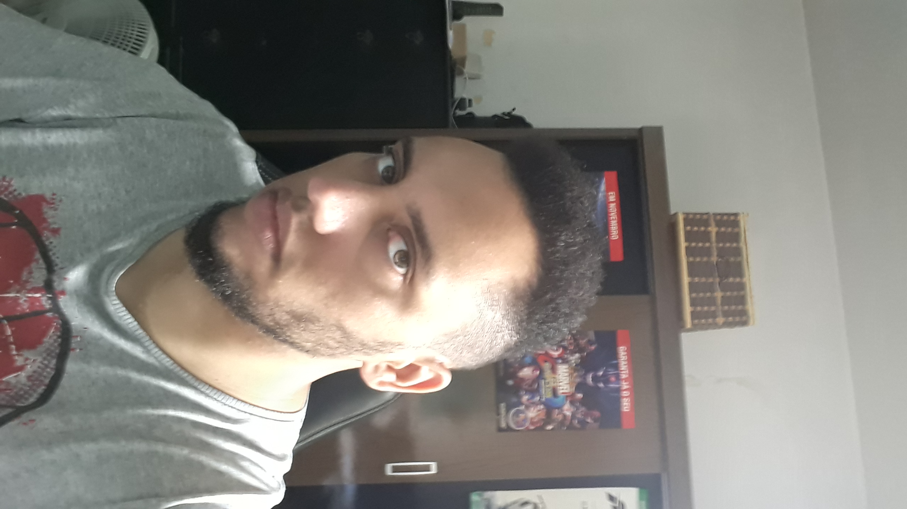

|  | Wallace Soares CarliniComunicador visual, artista e podcaster Ilustrador formado em Comunicação Visual e em Jogos Digitais. Redes sociais: |
| Photoshop | ✔✔✔✔✔ | Illustrator | ✔✔✔ |
| Indesign | ✔✔✔ | Adobe XD | ✔✔ |
| Premiere | ✔✔✔✔ | After Effects | ✔✔ |
| Pintura Digital | ✔✔✔ | Pixel Art | ✔✔✔ |
| Ano | Empresa | Cargo | Atividades |
| 2011 | Estúdio e Arte Fotografia | Design gráfico | Criação de recordações escolares, panfletos e tratamento de fotos. |
| 2015 | Securi Center | Estagiário | Suporte técnico e logística de equipamentos de segurança. |